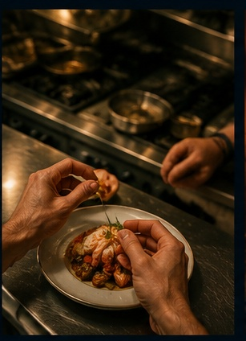
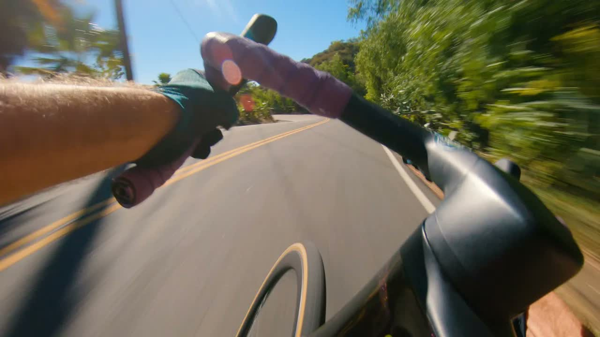
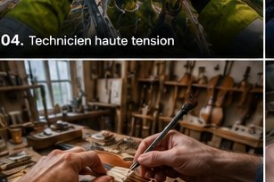
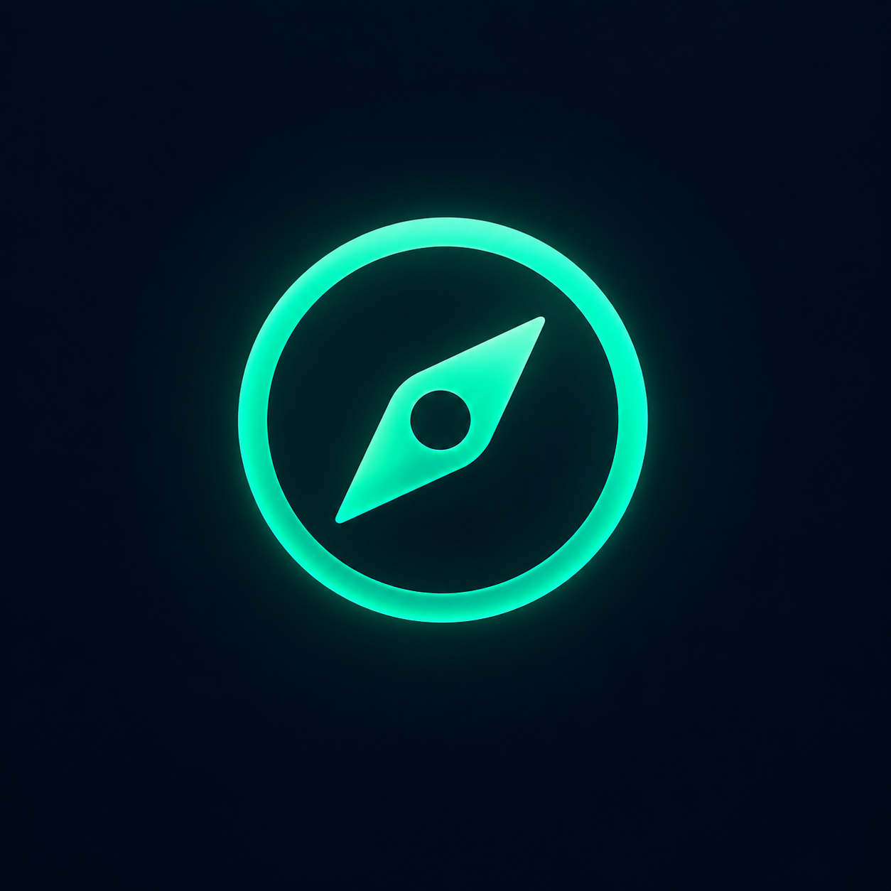
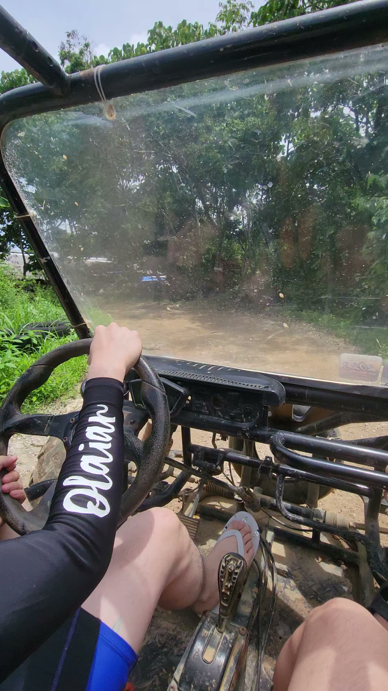

Découvrir une activité pendant qu'elle se déroule, avec sa spontanéité et ses imprévus.

Des passions,
des métiers,
des expériences
— en direct.
Découvrez des activités et des passions à travers ceux qui les vivent.
Vuvio — Référence produit 2026
VUVIO
02 — La vision
Le monde est déjà en train de se passer.
Vuvio est une application de Live qui permet de découvrir des activités, des métiers, des passions et des expériences réelles, au moment où elles se déroulent, à travers le point de vue des personnes qui les vivent.
Un artisan travaille dans son atelier. Un cycliste traverse les Alpes. Un guide parcourt les rues de Tokyo. Un chef est en plein service dans sa cuisine. Un musicien répète avant un concert.




Explorer des métiers, des passions, des lieux et des expériences.
Découvrir une activité depuis la perspective de la personne qui la pratique.
VUVIO
03 — Positionnement
Découvrir des personnes par ce qu'elles font.
Le Live existe déjà. Vuvio ne cherche pas à réinventer le direct, mais à organiser sa découverte autrement. La découverte commence par une activité, un métier, une passion ou une expérience qui nous intéresse.

01L'activité comme point d'entrée
Sur Vuvio, la découverte est organisée autour de ce que les personnes pratiquent et partagent. Il n'est pas nécessaire de connaître un créateur à l'avance pour découvrir ce qu'il partage.
Le direct et le point de vue
L'activité est découverte pendant qu'elle se déroule, depuis la perspective de la personne qui la pratique. Le Live montre les gestes, l'environnement, les conditions réelles et les moments imprévus.
Une découverte géographique
Le Globe permet d'explorer les Lives selon leur localisation et de découvrir des activités, des environnements ou des créateurs dans d'autres villes, régions ou pays.
Le Live n'est pas nouveau. La manière dont Vuvio associe activités, point de vue et découverte géographique constitue son positionnement.
VUVIO
06 — Parcours utilisateur
Le Live comme point de départ.
Découvrir une activité. Approfondir un intérêt. Avoir envie de revenir. Un Live permet d'entrer dans une pratique, un métier, une passion ou une expérience au moment où elle se déroule.
Un utilisateur découvre une activité qui l'intéresse depuis Watch, Explore ou le Globe.
Il en apprend davantage sur l'activité, le créateur, son profil et les expériences similaires.
Il suit un créateur ou découvre d'autres personnes autour du même centre d'intérêt.
Vuvio devient un endroit où retrouver les activités que l'on aime et découvrir de nouveaux Lives.


Après le Live — Les replays et recaps peuvent prolonger certaines expériences et permettre de les retrouver après leur diffusion, sans devenir le cœur de Vuvio.
VUVIO
07 — La dimension humaine
Des activités à découvrir, des passions à partager.
Vuvio part d'une idée simple : ce qui rend un Live intéressant, ce n'est pas seulement qu'il soit en direct, c'est ce qu'il permet de découvrir. Une activité. Un métier. Une passion. Un lieu. Et la personne qui les fait vivre.
Entrer dans une pratique pendant qu'elle se déroule et en comprendre le rythme, les gestes et l'environnement. Un service en cuisine, une répétition musicale, un travail d'atelier ou une activité sportive.
Partir d'une passion, d'un métier ou d'une pratique pour en découvrir différentes approches, dans d'autres environnements ou d'autres pays.
Découvrir le profil d'une personne, ses prochains Lives et d'autres créateurs autour d'activités similaires.
Permettre à des personnes qui partagent une passion, un métier ou une pratique de se découvrir au-delà de leur cercle habituel.
Le Live crée l'entrée.
L'activité crée l'intérêt.
La personne crée la connexion.